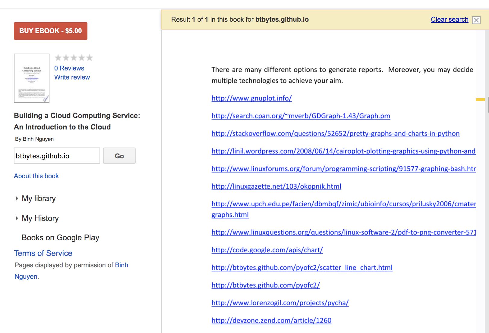

My code in books
2020-05-07
During a “vanity search” of this blog “btbytes.github.io”, I found out that some of my code have been quoted in published books:
(A Particle Swarm Optimization) implementation in Python in “Intelligent IoT Projects in 7 Days”. I remember writing this code for Dr Eberhart’s “Computation Intelligence” class at IUPUI.

The code in question:
#!/usr/bin/env python
'''
pso.py
A simple implementation of the Particle Swarm Optimisation Algorithm.
Uses Numpy for matrix operations.
Pradeep Gowda 2009-03-16
'''
from numpy import array
from random import random
from math import sin, sqrt
iter_max = 10000
pop_size = 100
dimensions = 2
c1 = 2
c2 = 2
err_crit = 0.00001
class Particle:
pass
def f6(param):
'''Schaffer's F6 function'''
para = param*10
para = param[0:2]
num = (sin(sqrt((para[0] * para[0]) + (para[1] * para[1])))) * \
(sin(sqrt((para[0] * para[0]) + (para[1] * para[1])))) - 0.5
denom = (1.0 + 0.001 * ((para[0] * para[0]) + (para[1] * para[1]))) * \
(1.0 + 0.001 * ((para[0] * para[0]) + (para[1] * para[1])))
f6 = 0.5 - (num/denom)
errorf6 = 1 - f6
return f6, errorf6;
#initialize the particles
particles = []
for i in range(pop_size):
p = Particle()
p.params = array([random() for i in range(dimensions)])
p.fitness = 0.0
p.v = 0.0
particles.append(p)
# let the first particle be the global best
gbest = particles[0]
err = 999999999
while i < iter_max :
for p in particles:
fitness,err = f6(p.params)
if fitness > p.fitness:
p.fitness = fitness
p.best = p.params
if fitness > gbest.fitness:
gbest = p
v = p.v + c1 * random() * (p.best - p.params) \
+ c2 * random() * (gbest.params - p.params)
p.params = p.params + v
i += 1
if err < err_crit:
break
#progress bar. '.' = 10%
if i % (iter_max/10) == 0:
print '.'
print '\nParticle Swarm Optimisation\n'
print 'PARAMETERS\n','-'*9
print 'Population size : ', pop_size
print 'Dimensions : ', dimensions
print 'Error Criterion : ', err_crit
print 'c1 : ', c1
print 'c2 : ', c2
print 'function : f6'
print 'RESULTS\n', '-'*7
print 'gbest fitness : ', gbest.fitness
print 'gbest params : ', gbest.params
print 'iterations : ', i+1
## Uncomment to print particles
#for p in particles:
# print 'params: %s, fitness: %s, best: %s' % (p.params, p.fitness, p.best)That’s in Python2.x. Should probably rewrite it in Python3 one of these days.
A link to my PyOFC2 Python charting library in “Building a Cloud Computing Service: An Introduction to the Cloud”.
